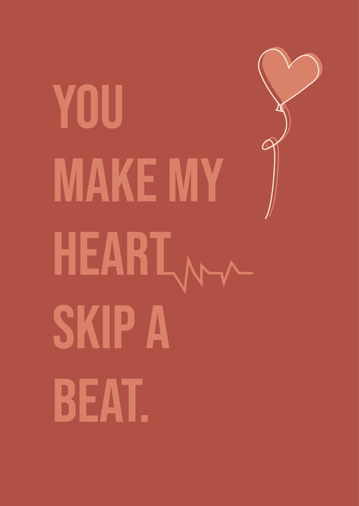
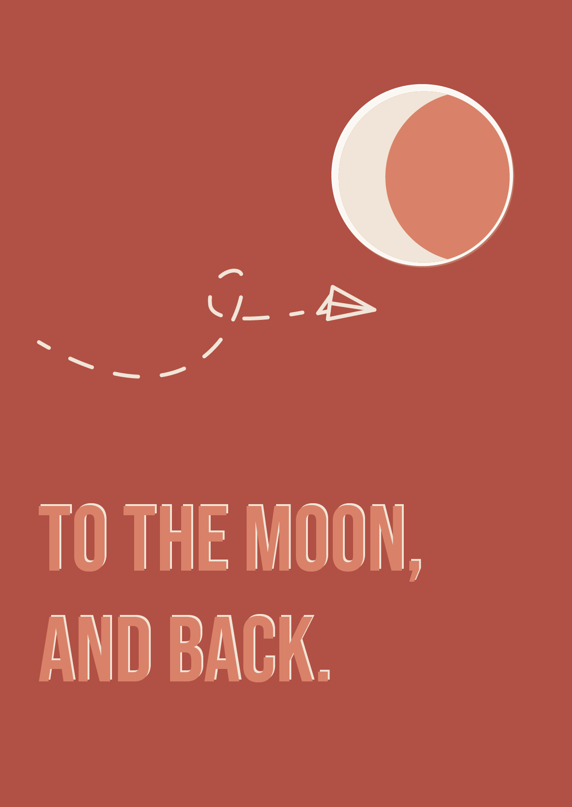
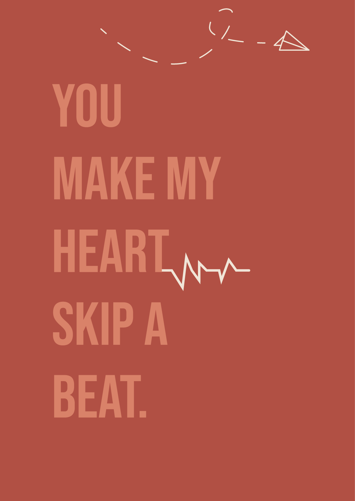
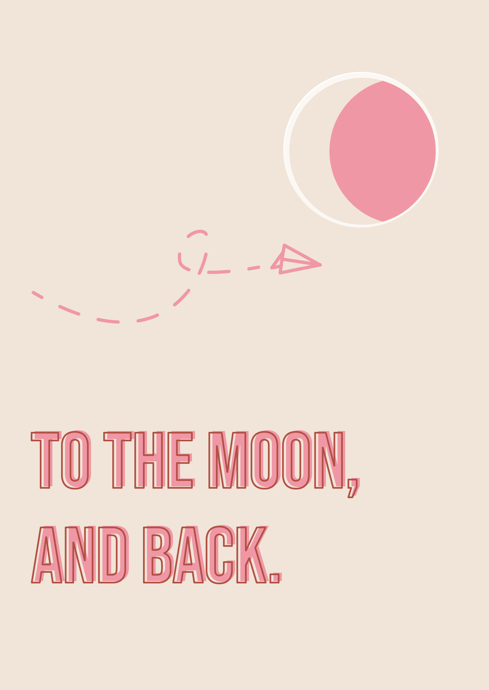
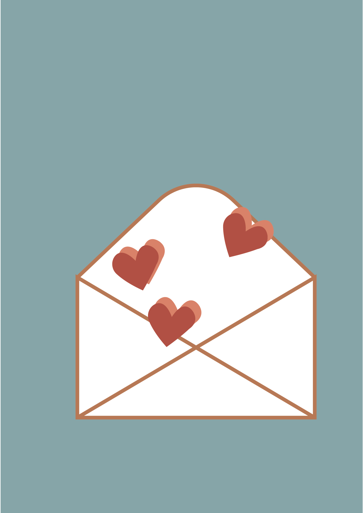
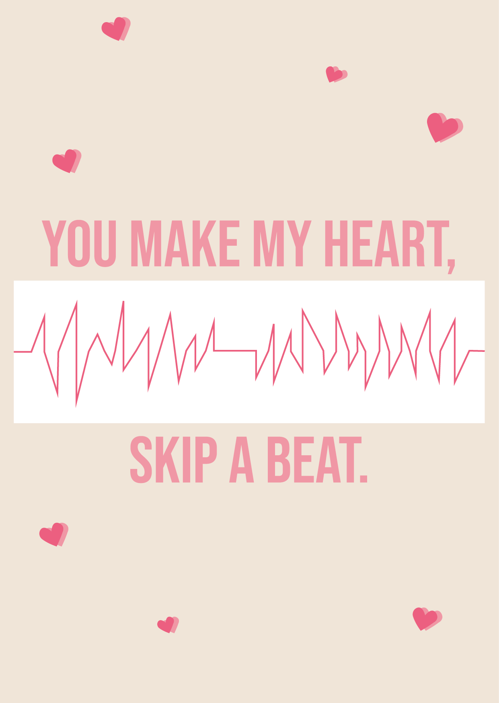
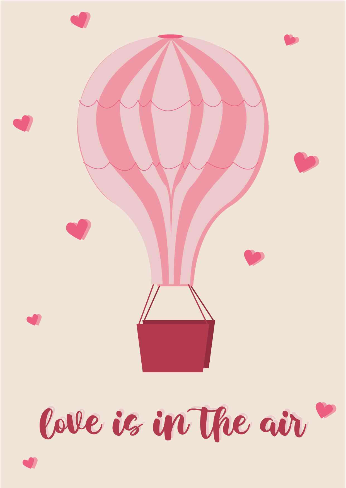
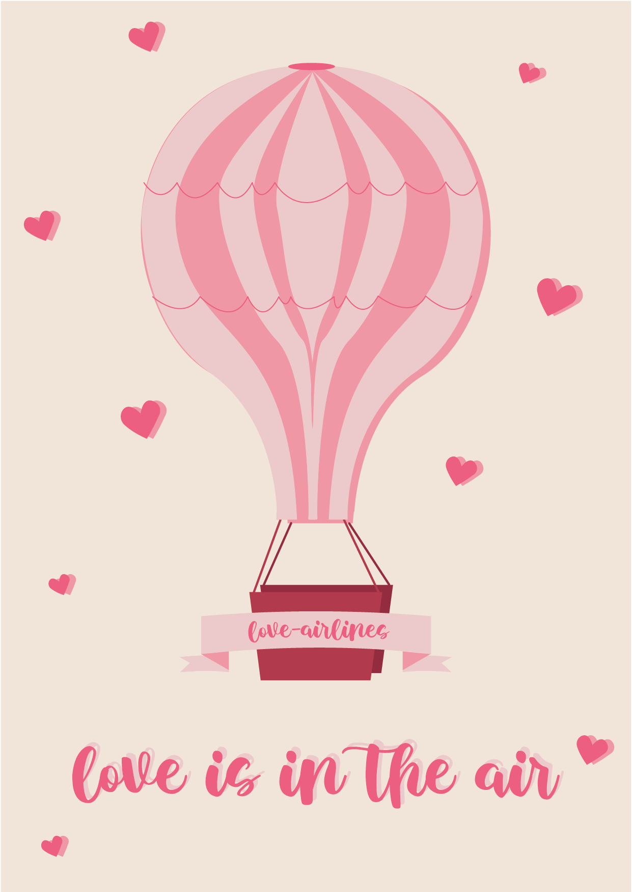

PopPub
Kaartje – 2024
Voor onze Valentijnsactie van PopPub de leeronderneming van De Prins hebben we allemaal samen een brievenbusgelukje gemaakt. Een concept met een brievenbusdoos met allerlei dingen in zoals: bladwijzer, snoepjes, button (en) kaart. Hierin heb ik bijgedragen door alles te bestellen van buttons tot kaartjes en het kaartje thema Valentijn ontworpen. De laatste is gekozen en gedrukt.
12-2024







